武将の性能に関するAPIの説明となります。
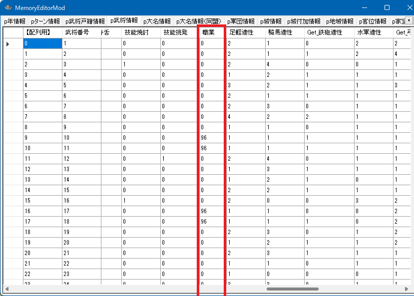
p武将情報[ix].職業
「職業::無し」～「職業::魔族」に対応する。
TSMod側から歴史上の武将に割り当てている職業としては、「職業::無し」～「職業::切支丹」である。
void カスタム::On_プレイヤ担当ターン《メイン画面》() {
for (int BushouID = 0; BushouID <= 最大数::武将情報::配列数; BushouID++) {
// この人は昇天してる、次の人
if (p武将戸籍情報[BushouID].状態 == 状態::死亡 || p武将戸籍情報[BushouID].戦死 == true) {
continue;
}
int 職業 = p武将情報[BushouID].職業;
if (職業 != 職業::無し) {
デバッグ出力 << Get_名字(BushouID) + Get_名前(BushouID) << "は、";
switch (職業) {
case 職業::忍者:
デバッグ出力 << "忍者";
break;
case 職業::茶人:
デバッグ出力 << "茶人";
break;
case 職業::剣豪:
デバッグ出力 << "剣豪";
break;
case 職業::僧侶:
デバッグ出力 << "僧侶";
break;
case 職業::海賊:
デバッグ出力 << "海賊";
break;
case 職業::高家:
デバッグ出力 << "高家";
break;
case 職業::商人:
デバッグ出力 << "商人";
break;
case 職業::庶民:
デバッグ出力 << "庶民";
break;
case 職業::切支丹:
デバッグ出力 << "切支丹";
break;
case 職業::騎士:
デバッグ出力 << "騎士";
break;
case 職業::魔術士:
デバッグ出力 << "魔術士";
break;
case 職業::魔族:
デバッグ出力 << "魔族";
break;
}
デバッグ出力 << "です。" << endl;
}
}
}
void カスタム::On_プレイヤ担当ターン《メイン画面》() {
int iBushouID = Get_武将番号【配列用】(顔番号::武田晴信);
if (0 <= iBushouID && iBushouID < 最大数::武将情報::配列数) {
// 信玄という名前になってしまっているならば...
if (Get_名前(iBushouID) == "信玄") {
// 僧侶になる
p武将情報[iBushouID].職業 == 職業::僧侶;
}
}
}
On_職業名表示直前 にて武将個人や状況に併せて、自由に職業名を変更できるようになっています。
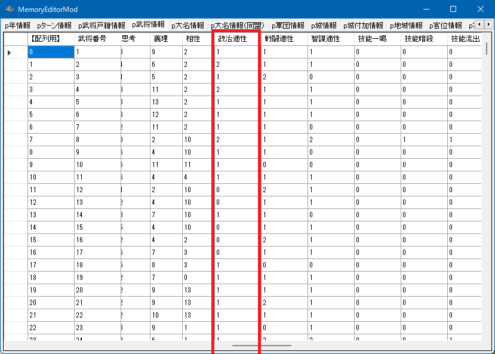
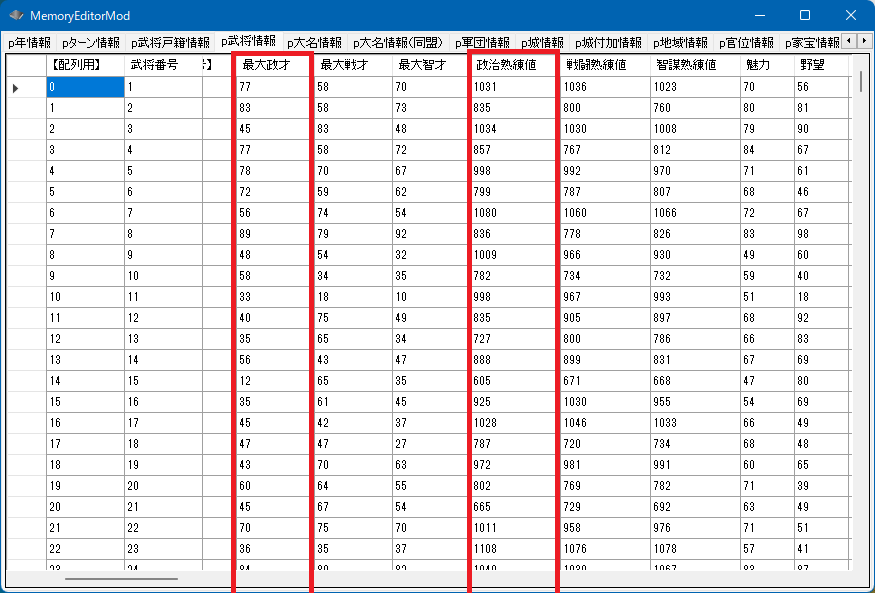
int Get_政治値(int 武将番号【配列用】)
現在の政治の値
p武将情報[iBushouID].最大政才
家宝による上昇を含んだ才能
int Get_元最大政才(int 武将番号【配列用】)
家宝による上昇を除いた才能
p武将情報[ix].政治熟練値
政治熟練値 は 500～2000であり、最大政才*政治熟練値/2000が Get_政治値(...) と同じ値である。
「要するに本人の持つ「政治の才能」の何％まで熟練しているのか？」という考え方であり、
本人の政治の最大の才能が80だとすると、熟練値500だと20、熟練値2000だと80 ということになる。
p武将情報[iBushouID].政治適性
「政治適性::Ｃ～政治適性::Ａ」に対応する
void カスタム::On_プレイヤ担当ターン《メイン画面》() {
int iBushouID = Get_武将番号【配列用】(顔番号::松永久秀);
if (0 <= iBushouID && iBushouID < 最大数::武将情報::配列数) {
string 姓名 = Get_名字(iBushouID) + Get_名前(iBushouID);
int 政治値 = Get_政治値(iBushouID);
int 最大政才 = p武将情報[iBushouID].最大政才;
int 元政才 = Get_元最大政才(iBushouID);
int 家宝による上昇 = 最大政才 - 元政才;
int 政治熟練値 = p武将情報[iBushouID].政治熟練値;
int 政治適性 = p武将情報[iBushouID].政治適性;
デバッグ出力 << 姓名 << "の政治値は" << 政治値 << "です。" << endl;
デバッグ出力 << "ゲーム上の表示値は" << 政治値*2 << "です。" << endl;
デバッグ出力 << "最大政才は" << 最大政才 << "です。" << endl;
デバッグ出力 << "家宝などの上昇を除外した本人の政才としては" << 元政才 << "です。" << endl;
デバッグ出力 << "よって家宝による上昇値は" << 家宝による上昇 << "です。" << endl;
デバッグ出力 << "政治熟練値は" << 政治熟練値 << "です。" << endl;
if (政治適性 == 政治適性::Ａ) {
デバッグ出力 << "政治適性はＡです。" << endl;
}
else if (政治適性 == 政治適性::Ｂ) {
デバッグ出力 << "政治適性はＢです。" << endl;
}
else if (政治適性 == 政治適性::Ｃ) {
デバッグ出力 << "政治適性はＣです。" << endl;
}
}
}
松永久秀の政治値は53です。 ゲーム上の表示値は106です。 最大政才は102です。 家宝などの上昇を除外した本人の政才としては92です。 よって家宝による上昇値は10です。 政治熟練値は1047です。 政治適性はＡです。
void カスタム::On_プレイヤ担当ターン《メイン画面》() {
for (int iBushouID = 0; iBushouID < 最大数::武将情報::配列数; iBushouID++) {
p武将情報[iBushouID].政治適性 = 政治適性::Ｃ;
}
}
変更するだけなら値を代入すれば終わりですが、
家宝による上昇分を考慮して代入するのが普通です。
それは以下のような形となることでしょう。
void カスタム::On_プレイヤ担当ターン《メイン画面》() {
// 松永久秀の「家宝を含めない」政才を170(内部データでは85)」にするのが目的とする
// 家宝を含めないというところがポイント。
int iBushouID = Get_武将番号【配列用】(顔番号::松永久秀);
if ( 0 <= iBushouID && iBushouID < 最大数::武将情報::配列数) {
int 最大政才 = p武将情報[iBushouID].最大政才;
int 元最大政才 = Get_元最大政才(iBushouID);
int 家宝によるブースト = 最大政才 - 元最大政才;
// 目標の170に家宝によるブーストを足した値が、新たな「最大政才」だ。
int 新最大政才 = 85 + 家宝によるブースト;
p武将情報[iBushouID].最大政才 = 新最大政才;
// 才能が変わったので改めて取得しなおす(85を元値として設定したので、85が取れるはずだ)
int 新元最大政才能 = Get_元最大政才(iBushouID);
デバッグ出力 << Get_名字(iBushouID) + Get_名前(iBushouID) << "の最大政才は" << (int)(p武将情報[iBushouID].最大政才) << "で、" << "家宝によるブーストを除去した値は" << 新元最大政才能 << "です。" << endl;
}
}
void カスタム::On_プレイヤ担当ターン《メイン画面》() {
// 熟練値を代入する。現在の才能に基づいて、家宝のブースト込みで政治値がゲーム上で90(データ内部では45)になるように、政治熟練値を計算する
int iBushouID = Get_武将番号【配列用】(顔番号::武田晴信);
if (0 <= iBushouID && iBushouID < 最大数::武将情報::配列数) {
int 最大政才 = p武将情報[iBushouID].最大政才;
// 最大政才 * (Ｘ / 2000) = 45 となるような Ｘにすれば良い。Ｘが少数になってしまったら切り上げて整数とする。
// Ｘ = 2000 * 45 / 最大政才 Ｘはceilすること
int 熟練値 = ((2000 * 45) / 最大政才) + 1; // ギリギリだと、浮動小数精度の違いで届かないことがあるので、１程度足して切り上げておく。
// 熟練値はゲーム的には500-2000の間で縛られる
if (熟練値 > 2000) {
熟練値 = 2000;
}
if (熟練値 < 500) {
熟練値 = 500;
}
p武将情報[iBushouID].政治熟練値 = 熟練値;
デバッグ出力 << Get_名字(iBushouID) + Get_名前(iBushouID) << "の政治値は" << Get_政治値(iBushouID) << endl;;
}
}
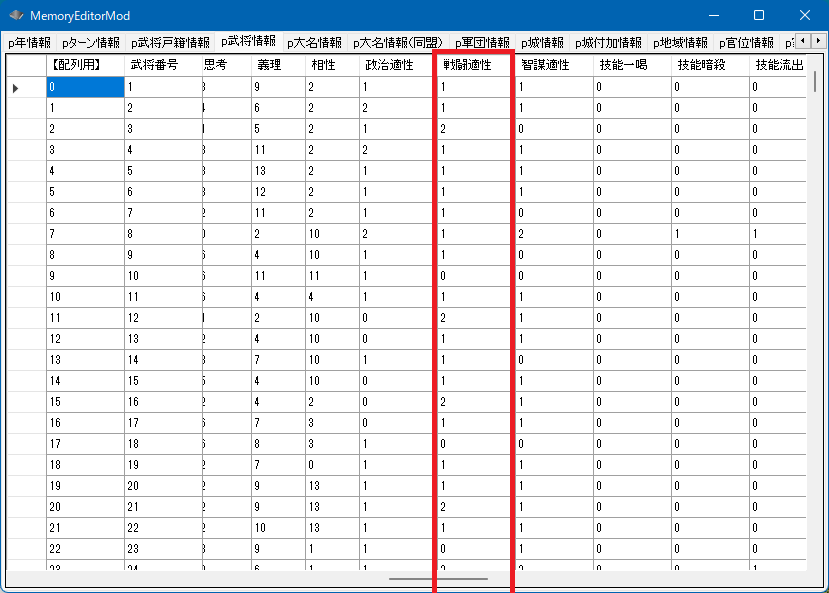
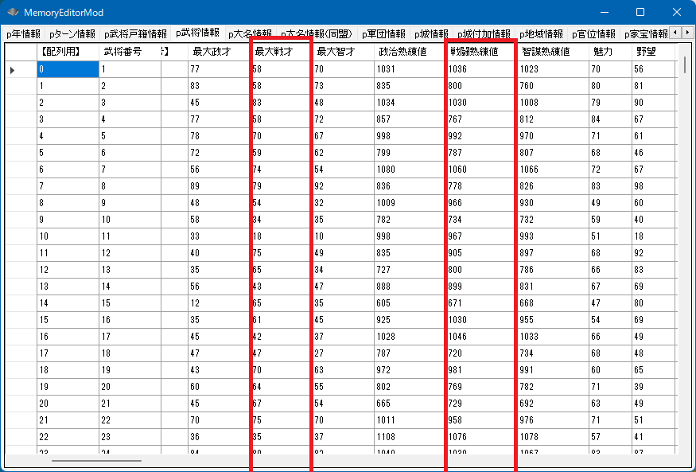
int Get_戦闘値(int 武将番号【配列用】)
現在の戦闘の値
p武将情報[iBushouID].最大戦才
家宝による上昇を含んだ才能
int Get_元最大戦才(int 武将番号【配列用】)
家宝による上昇を除いた才能
p武将情報[ix].戦闘熟練値
戦闘熟練値 は 500～2000であり、最大戦才*戦闘熟練値/2000が Get_戦闘値(...) と同じ値である。
「要するに本人の持つ「戦闘の才能」の何％まで熟練しているのか？」という考え方であり、
本人の戦闘の最大の才能が80だとすると、熟練値500だと20、熟練値2000だと80 ということになる。
p武将情報[iBushouID].戦闘適性
「戦闘適性::Ｃ～戦闘適性::Ａ」に対応する
void カスタム::On_プレイヤ担当ターン《メイン画面》() {
int iBushouID = Get_武将番号【配列用】(顔番号::松永久秀);
if (0 <= iBushouID && iBushouID < 最大数::武将情報::配列数) {
string 姓名 = Get_名字(iBushouID) + Get_名前(iBushouID);
int 戦闘値 = Get_戦闘値(iBushouID);
int 最大戦才 = p武将情報[iBushouID].最大戦才;
int 元戦才 = Get_元最大戦才(iBushouID);
int 家宝による上昇 = 最大戦才 - 元戦才;
int 戦闘熟練値 = p武将情報[iBushouID].戦闘熟練値;
int 戦闘適性 = p武将情報[iBushouID].戦闘適性;
デバッグ出力 << 姓名 << "の戦闘値は" << 戦闘値 << "です。" << endl;
デバッグ出力 << "ゲーム上の表示値は" << 戦闘値*2 << "です。" << endl;
デバッグ出力 << "最大戦才は" << 最大戦才 << "です。" << endl;
デバッグ出力 << "家宝などの上昇を除外した本人の戦才としては" << 元戦才 << "です。" << endl;
デバッグ出力 << "よって家宝による上昇値は" << 家宝による上昇 << "です。" << endl;
デバッグ出力 << "戦闘熟練値は" << 戦闘熟練値 << "です。" << endl;
if (戦闘適性 == 戦闘適性::Ａ) {
デバッグ出力 << "戦闘適性はＡです。" << endl;
}
else if (戦闘適性 == 戦闘適性::Ｂ) {
デバッグ出力 << "戦闘適性はＢです。" << endl;
}
else if (戦闘適性 == 戦闘適性::Ｃ) {
デバッグ出力 << "戦闘適性はＣです。" << endl;
}
}
}
本多忠勝の戦闘値は41です。 ゲーム上の表示値は82です。 最大戦才は101です。 家宝などの上昇を除外した本人の戦才としては91です。 よって家宝による上昇値は10です。 戦闘熟練値は823です。 戦闘適性はＡです。
void カスタム::On_プレイヤ担当ターン《メイン画面》() {
for (int iBushouID = 0; iBushouID < 最大数::武将情報::配列数; iBushouID++) {
p武将情報[iBushouID].戦闘適性 = 戦闘適性::Ｃ;
}
}
変更するだけなら値を代入すれば終わりですが、
家宝による上昇分を考慮して代入するのが普通です。
それは以下のような形となることでしょう。
void カスタム::On_プレイヤ担当ターン《メイン画面》() {
// 本多忠勝の「家宝を含めない」戦才を170(内部データでは85)」にするのが目的とする
// 家宝を含めないというところがポイント。
int iBushouID = Get_武将番号【配列用】(顔番号::本多忠勝);
if ( 0 <= iBushouID && iBushouID < 最大数::武将情報::配列数) {
int 最大戦才 = p武将情報[iBushouID].最大戦才;
int 元最大戦才 = Get_元最大戦才(iBushouID);
int 家宝によるブースト = 最大戦才 - 元最大戦才;
// 目標の170に家宝によるブーストを足した値が、新たな「最大戦才」だ。
int 新最大戦才 = 85 + 家宝によるブースト;
p武将情報[iBushouID].最大戦才 = 新最大戦才;
// 才能が変わったので改めて取得しなおす(85を元値として設定したので、85が取れるはずだ)
int 新元最大戦才能 = Get_元最大戦才(iBushouID);
デバッグ出力 << Get_名字(iBushouID) + Get_名前(iBushouID) << "の最大戦才は" << (int)(p武将情報[iBushouID].最大戦才) << "で、" << "家宝によるブーストを除去した値は" << 新元最大戦才能 << "です。" << endl;
}
}
void カスタム::On_プレイヤ担当ターン《メイン画面》() {
// 熟練値を代入する。現在の才能に基づいて、家宝のブースト込みで戦闘値がゲーム上で90(データ内部では45)になるように、戦闘熟練値を計算する
int iBushouID = Get_武将番号【配列用】(顔番号::武田晴信);
if (0 <= iBushouID && iBushouID < 最大数::武将情報::配列数) {
int 最大戦才 = p武将情報[iBushouID].最大戦才;
// 最大戦才 * (Ｘ / 2000) = 45 となるような Ｘにすれば良い。Ｘが少数になってしまったら切り上げて整数とする。
// Ｘ = 2000 * 45 / 最大戦才 Ｘはceilすること
int 熟練値 = ((2000 * 45) / 最大戦才) + 1; // ギリギリだと、浮動小数精度の違いで届かないことがあるので、１程度足して切り上げておく。
// 熟練値はゲーム的には500-2000の間で縛られる
if (熟練値 > 2000) {
熟練値 = 2000;
}
if (熟練値 < 500) {
熟練値 = 500;
}
p武将情報[iBushouID].戦闘熟練値 = 熟練値;
デバッグ出力 << Get_名字(iBushouID) + Get_名前(iBushouID) << "の戦闘値は" << Get_戦闘値(iBushouID) << endl;;
}
}
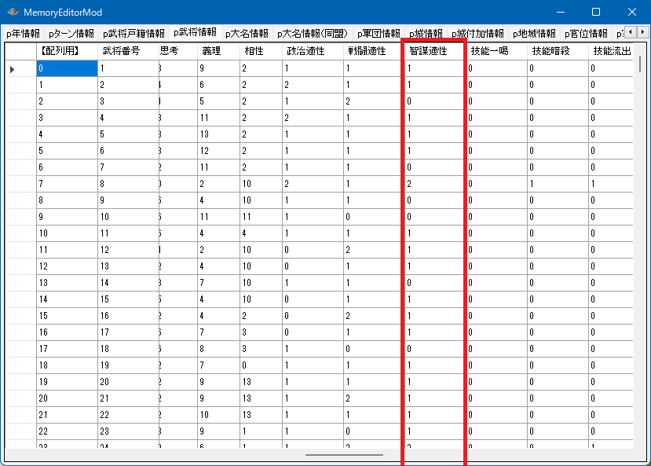
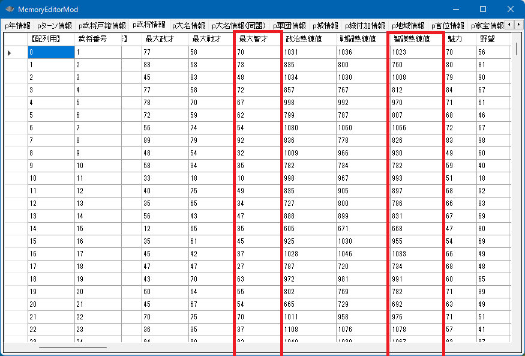
int Get_智謀値(int 武将番号【配列用】)
現在の智謀の値
p武将情報[iBushouID].最大智才
家宝による上昇を含んだ才能
int Get_元最大智才(int 武将番号【配列用】)
家宝による上昇を除いた才能
p武将情報[ix].智謀熟練値
智謀熟練値 は 500～2000であり、最大智才*智謀熟練値/2000が Get_智謀値(...) と同じ値である。
「要するに本人の持つ「智謀の才能」の何％まで熟練しているのか？」という考え方であり、
本人の智謀の最大の才能が80だとすると、熟練値500だと20、熟練値2000だと80 ということになる。
p武将情報[iBushouID].智謀適性
「智謀適性::Ｃ～智謀適性::Ａ」に対応する
void カスタム::On_プレイヤ担当ターン《メイン画面》() {
int iBushouID = Get_武将番号【配列用】(顔番号::武田晴信);
if (0 <= iBushouID && iBushouID < 最大数::武将情報::配列数) {
string 姓名 = Get_名字(iBushouID) + Get_名前(iBushouID);
int 智謀値 = Get_智謀値(iBushouID);
int 最大智才 = p武将情報[iBushouID].最大智才;
int 元智才 = Get_元最大智才(iBushouID);
int 家宝による上昇 = 最大智才 - 元智才;
int 智謀熟練値 = p武将情報[iBushouID].智謀熟練値;
int 智謀適性 = p武将情報[iBushouID].智謀適性;
デバッグ出力 << 姓名 << "の智謀値は" << 智謀値 << "です。" << endl;
デバッグ出力 << "ゲーム上の表示値は" << 智謀値*2 << "です。" << endl;
デバッグ出力 << "最大智才は" << 最大智才 << "です。" << endl;
デバッグ出力 << "家宝などの上昇を除外した本人の智才としては" << 元智才 << "です。" << endl;
デバッグ出力 << "よって家宝による上昇値は" << 家宝による上昇 << "です。" << endl;
デバッグ出力 << "智謀熟練値は" << 智謀熟練値 << "です。" << endl;
if (智謀適性 == 智謀適性::Ａ) {
デバッグ出力 << "智謀適性はＡです。" << endl;
}
else if (智謀適性 == 智謀適性::Ｂ) {
デバッグ出力 << "智謀適性はＢです。" << endl;
}
else if (智謀適性 == 智謀適性::Ｃ) {
デバッグ出力 << "智謀適性はＣです。" << endl;
}
}
}
武田信玄の智謀値は54です。 ゲーム上の表示値は108です。 最大智才は104です。 家宝などの上昇を除外した本人の智才としては94です。 よって家宝による上昇値は10です。 智謀熟練値は1042です。 智謀適性はＡです。
void カスタム::On_プレイヤ担当ターン《メイン画面》() {
for (int iBushouID = 0; iBushouID < 最大数::武将情報::配列数; iBushouID++) {
p武将情報[iBushouID].智謀適性 = 智謀適性::Ｃ;
}
}
変更するだけなら値を代入すれば終わりですが、
家宝による上昇分を考慮して代入するのが普通です。
それは以下のような形となることでしょう。
void カスタム::On_プレイヤ担当ターン《メイン画面》() {
// 武田晴信の「家宝を含めない」智才を170(内部データでは85)」にするのが目的とする
// 家宝を含めないというところがポイント。
int iBushouID = Get_武将番号【配列用】(顔番号::武田晴信);
if ( 0 <= iBushouID && iBushouID < 最大数::武将情報::配列数) {
int 最大智才 = p武将情報[iBushouID].最大智才;
int 元最大智才 = Get_元最大智才(iBushouID);
int 家宝によるブースト = 最大智才 - 元最大智才;
// 目標の170に家宝によるブーストを足した値が、新たな「最大智才」だ。
int 新最大智才 = 85 + 家宝によるブースト;
p武将情報[iBushouID].最大智才 = 新最大智才;
// 才能が変わったので改めて取得しなおす(85を元値として設定したので、85が取れるはずだ)
int 新元最大智才能 = Get_元最大智才(iBushouID);
デバッグ出力 << Get_名字(iBushouID) + Get_名前(iBushouID) << "の最大智才は" << (int)(p武将情報[iBushouID].最大智才) << "で、" << "家宝によるブーストを除去した値は" << 新元最大智才能 << "です。" << endl;
}
}
void カスタム::On_プレイヤ担当ターン《メイン画面》() {
// 熟練値を代入する。現在の才能に基づいて、家宝のブースト込みで智謀値がゲーム上で90(データ内部では45)になるように、智謀熟練値を計算する
int iBushouID = Get_武将番号【配列用】(顔番号::武田晴信);
if (0 <= iBushouID && iBushouID < 最大数::武将情報::配列数) {
int 最大智才 = p武将情報[iBushouID].最大智才;
// 最大智才 * (Ｘ / 2000) = 45 となるような Ｘにすれば良い。Ｘが少数になってしまったら切り上げて整数とする。
// Ｘ = 2000 * 45 / 最大智才 Ｘはceilすること
int 熟練値 = ((2000 * 45) / 最大智才) + 1; // ギリギリだと、浮動小数精度の違いで届かないことがあるので、１程度足して切り上げておく。
// 熟練値はゲーム的には500-2000の間で縛られる
if (熟練値 > 2000) {
熟練値 = 2000;
}
if (熟練値 < 500) {
熟練値 = 500;
}
p武将情報[iBushouID].智謀熟練値 = 熟練値;
デバッグ出力 << Get_名字(iBushouID) + Get_名前(iBushouID) << "の智謀値は" << Get_智謀値(iBushouID) << endl;;
}
}
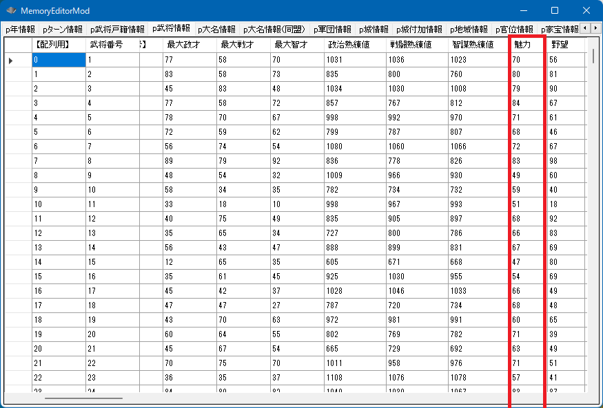
p武将情報[ix].魅力
この魅力は、魅力の元値＋官位によるブーストがたされた数値となります。
int Get_元魅力(int 武将番号【配列用】)
こちらの関数を利用することで、官位によるブーストされる前の魅力の値を取得することができます。
void カスタム::On_プレイヤ担当ターン《メイン画面》() {
for (int iBushouID = 0; iBushouID < 最大数::武将情報::配列数; iBushouID++) {
// 死んでない
if (p武将戸籍情報[iBushouID].状態 != 状態::死亡 && p武将戸籍情報[iBushouID].戦死 == false) {
int 魅力値 = p武将情報[iBushouID].魅力;
int 元魅力 = Get_元魅力(iBushouID);
if (魅力値 != 元魅力) {
デバッグ出力 << Get_名字(iBushouID) + Get_名前(iBushouID) << "の魅力は" << 魅力値 << "です。" << endl;
デバッグ出力 << "元魅力の値は" << 元魅力 << "です。" << endl;
デバッグ出力 << "官位によって" << 魅力値 - 元魅力 << "上昇しています。" << endl;
}
}
}
}
void カスタム::On_プレイヤ担当ターン《メイン画面》() {
for (int iBushouID = 0; iBushouID < 最大数::武将情報::配列数; iBushouID++) {
// 死んでない
if (p武将戸籍情報[iBushouID].状態 != 状態::死亡 && p武将戸籍情報[iBushouID].戦死 == false) {
int 魅力値 = p武将情報[iBushouID].魅力;
int 元魅力 = Get_元魅力(iBushouID);
int 差分 = 魅力値 - 元魅力;
p武将情報[iBushouID].魅力 = 50 + 差分; // 官位の分を足しこみつつ、魅力を変更する
}
}
}
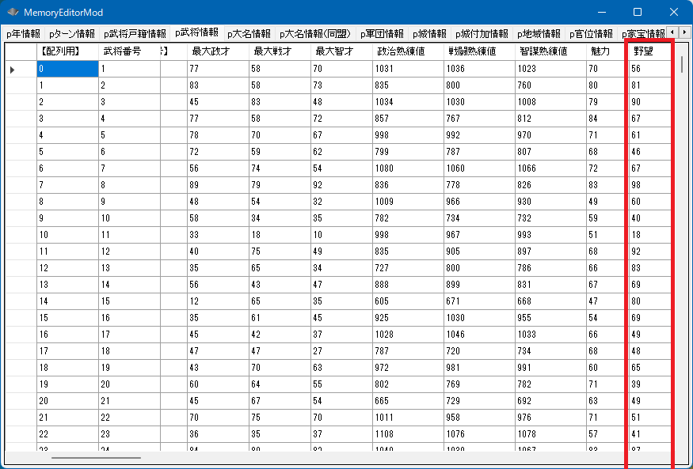
p武将情報[ix].野望
この野望は、野望の元値＋家宝によるブーストがたされた数値となります。
int Get_元野望(int 武将番号【配列用】)
こちらの関数を利用することで、家宝によるブーストされる前の野望の値を取得することができます。
void カスタム::On_プレイヤ担当ターン《メイン画面》() {
for (int iBushouID = 0; iBushouID < 最大数::武将情報::配列数; iBushouID++) {
// 死んでない
if (p武将戸籍情報[iBushouID].状態 != 状態::死亡 && p武将戸籍情報[iBushouID].戦死 == false) {
int 野望値 = p武将情報[iBushouID].野望;
int 元野望 = Get_元野望(iBushouID);
if (野望値 != 元野望) {
デバッグ出力 << Get_名字(iBushouID) + Get_名前(iBushouID) << "の野望は" << 野望値 << "です。" << endl;
デバッグ出力 << "元野望の値は" << 元野望 << "です。" << endl;
デバッグ出力 << "家宝によって" << 野望値 - 元野望 << "上昇しています。" << endl;
}
}
}
}
void カスタム::On_プレイヤ担当ターン《メイン画面》() {
for (int iBushouID = 0; iBushouID < 最大数::武将情報::配列数; iBushouID++) {
// 死んでない
if (p武将戸籍情報[iBushouID].状態 != 状態::死亡 && p武将戸籍情報[iBushouID].戦死 == false) {
int 野望値 = p武将情報[iBushouID].野望;
int 元野望 = Get_元野望(iBushouID);
int 差分 = 野望値 - 元野望;
p武将情報[iBushouID].野望 = 50 + 差分; // 家宝の分を足しこみつつ、野望を変更する
}
}
}
p武将情報[ix].技能一喝
p武将情報[ix].技能暗殺
p武将情報[ix].技能流出
p武将情報[ix].技能煽動
p武将情報[ix].技能流言
p武将情報[ix].技能弁舌
p武将情報[ix].技能焼討
p武将情報[ix].技能挑発
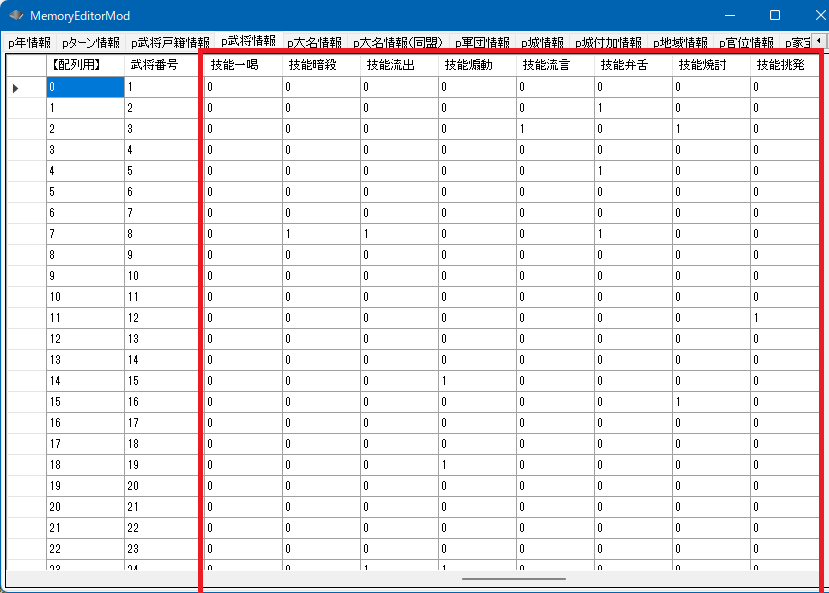
void カスタム::On_プレイヤ担当ターン《メイン画面》() {
for (int iBushouID = 0; iBushouID < 最大数::武将情報::配列数; iBushouID++) {
// 死んでない
if (p武将戸籍情報[iBushouID].状態 != 状態::死亡 && p武将戸籍情報[iBushouID].戦死 == false) {
デバッグ出力 << Get_名字(iBushouID) + Get_名前(iBushouID) << "は、";
if (p武将情報[iBushouID].技能一喝) {
デバッグ出力 << "一喝" << " ";
}
if (p武将情報[iBushouID].技能暗殺) {
デバッグ出力 << "暗殺" << " ";
}
if (p武将情報[iBushouID].技能流出) {
デバッグ出力 << "流出" << " ";
}
if (p武将情報[iBushouID].技能煽動) {
デバッグ出力 << "煽動" << " ";
}
if (p武将情報[iBushouID].技能流言) {
デバッグ出力 << "流言" << " ";
}
if (p武将情報[iBushouID].技能弁舌) {
デバッグ出力 << "弁舌" << " ";
}
if (p武将情報[iBushouID].技能焼討) {
デバッグ出力 << "焼討" << " ";
}
if (p武将情報[iBushouID].技能挑発) {
デバッグ出力 << "挑発" << " ";
}
デバッグ出力 << "が使えます" << endl;
}
}
}
void カスタム::On_プレイヤ担当ターン《メイン画面》() {
for (int iBushouID = 0; iBushouID < 最大数::武将情報::配列数; iBushouID++) {
// 死んでない
if (p武将戸籍情報[iBushouID].状態 != 状態::死亡 && p武将戸籍情報[iBushouID].戦死 == false) {
p武将情報[iBushouID].技能一喝 = true;
p武将情報[iBushouID].技能暗殺 = true;
p武将情報[iBushouID].技能流出 = true;
p武将情報[iBushouID].技能煽動 = true;
p武将情報[iBushouID].技能流言 = true;
p武将情報[iBushouID].技能弁舌 = true;
p武将情報[iBushouID].技能焼討 = true;
p武将情報[iBushouID].技能挑発 = true;
}
}
}
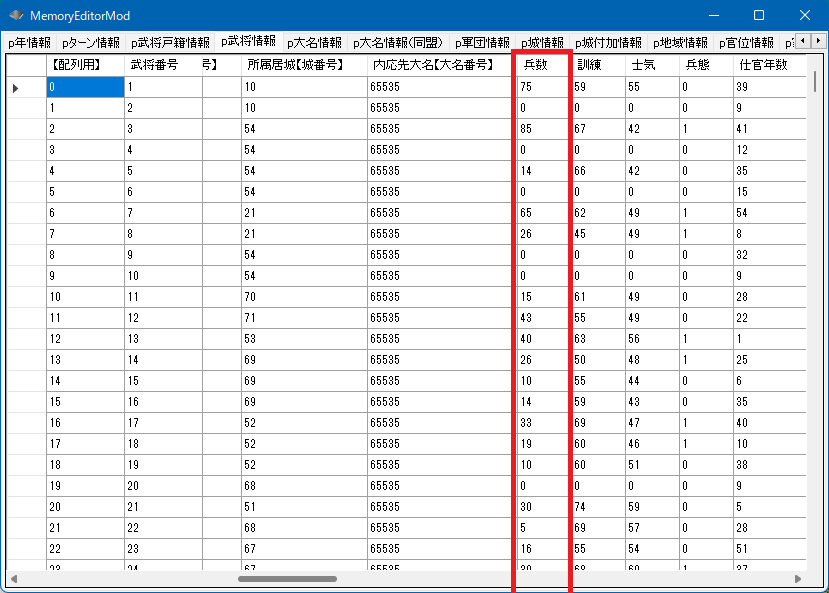
p武将情報[ix].兵数
int Get_武将最大兵数(int 武将番号【配列用】)
void カスタム::On_プレイヤ担当ターン《メイン画面》() {
for (int iBushouID = 0; iBushouID < 最大数::武将情報::配列数; iBushouID++) {
// 死んでない
if (p武将戸籍情報[iBushouID].状態 != 状態::死亡 && p武将戸籍情報[iBushouID].戦死 == false) {
if (p武将情報[iBushouID].兵数 > 70) {
デバッグ出力 << Get_名字(iBushouID) + Get_名前(iBushouID) << "の兵数は" << p武将情報[iBushouID].兵数 << "と多いです" << endl;
}
}
}
}
void カスタム::On_プレイヤ担当ターン《メイン画面》() {
int iBushouID = Get_武将番号【配列用】(顔番号::織田信長);
if (0 <= iBushouID && iBushouID < 最大数::武将情報::配列数) {
int 最大兵数 = Get_武将最大兵数(iBushouID);
p武将情報[iBushouID].兵数 = 最大兵数;
}
}
p武将情報[ix].訓練
訓練は最大200まで
p武将情報[ix].士気
士気は最大100まで
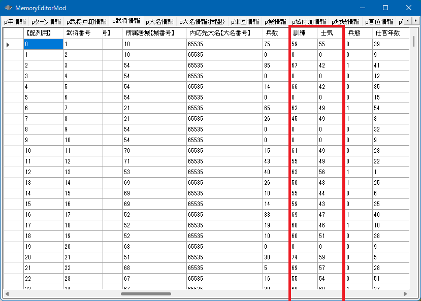
void カスタム::On_プレイヤ担当ターン《メイン画面》() {
for (int iBushouID = 0; iBushouID < 最大数::武将情報::配列数; iBushouID++) {
// 死んでない
if (p武将戸籍情報[iBushouID].状態 != 状態::死亡 && p武将戸籍情報[iBushouID].戦死 == false) {
int 訓練 = p武将情報[iBushouID].訓練;
int 士気 = p武将情報[iBushouID].士気;
string 姓名 = Get_名字(iBushouID) + Get_名前(iBushouID);
デバッグ出力 << 姓名 << "は、" << "訓練:" << 訓練 << "," << "士気:" << 士気 << endl;
}
}
}
void カスタム::On_プレイヤ担当ターン《メイン画面》() {
int iBushouID = Get_武将番号【配列用】(顔番号::織田信長);
if (0 <= iBushouID && iBushouID < 最大数::武将情報::配列数) {
int 最大兵数 = Get_武将最大兵数(iBushouID);
p武将情報[iBushouID].訓練 = 200;
p武将情報[iBushouID].士気 = 100;
}
}
兵態とは「足軽隊」「騎馬隊」「鉄砲隊」「騎馬鉄砲隊」の４つが基本となります。
「騎馬鉄砲隊」についてはごく一部の武将のみが使えます。
(※騎馬鉄砲が使える武将については次の項目にて説明しています。
TSModでは様々な兵態が存在していますが、基本となっているのはあくまで上記の４つです。
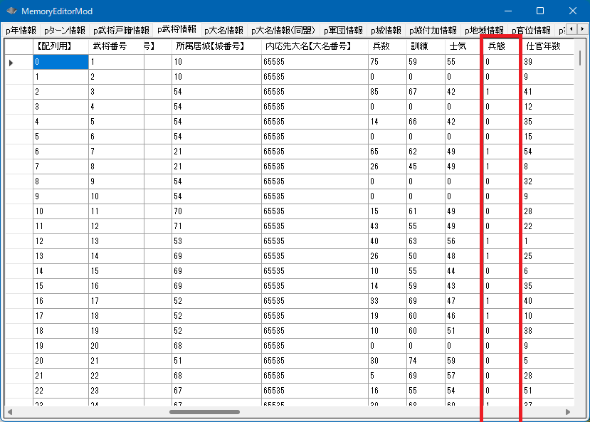
p武将情報[ix].兵態
void カスタム::On_プレイヤ担当ターン《メイン画面》() {
int iBushouID = Get_武将番号【配列用】(顔番号::織田信長);
if (0 <= iBushouID && iBushouID < 最大数::武将情報::配列数) {
int 兵態 = p武将情報[iBushouID].兵態;
デバッグ出力 << Get_名字(iBushouID) + Get_名前(iBushouID) << "は";
if (兵態 == 兵態::足軽) {
デバッグ出力 << "足軽系列";
}
else if (兵態 == 兵態::騎馬) {
デバッグ出力 << "騎馬系列";
}
else if (兵態 == 兵態::鉄砲) {
デバッグ出力 << "鉄砲系列";
}
else if (兵態 == 兵態::騎馬鉄砲) {
デバッグ出力 << "騎馬鉄砲系列";
}
デバッグ出力 << "の兵態です。" << endl;
}
}
void カスタム::On_プレイヤ担当ターン《メイン画面》() {
int iBushouID = Get_武将番号【配列用】(顔番号::織田信長);
if (0 <= iBushouID && iBushouID < 最大数::武将情報::配列数) {
p武将情報[iBushouID].兵態 = 兵態::騎馬;
}
int iAkechiBushouID = Get_武将番号【配列用】(顔番号::明智光秀);
if (0 <= iAkechiBushouID && iAkechiBushouID < 最大数::武将情報::配列数) {
// 騎馬鉄砲の場合は、「騎馬鉄砲が使える」というフラグを立てておくのを推奨
p武将情報[iAkechiBushouID].騎馬鉄砲 = true;
p武将情報[iAkechiBushouID].兵態 = 兵態::騎馬鉄砲;
}
}
void カスタム::On_プレイヤ担当ターン《メイン画面》() {
int iBushouID = Get_武将番号【配列用】(顔番号::織田信長);
if (0 <= iBushouID && iBushouID < 最大数::武将情報::配列数) {
int 元の兵態 = p武将情報[iBushouID].兵態;
p武将情報[iBushouID].兵態 = 兵態::騎馬;
int 兵数 = p武将情報[iBushouID].兵数;
int iGundanID = p武将情報[iBushouID].所属軍団【軍団番号】 - 1;
if (0 <= iGundanID && iGundanID < 最大数::軍団情報::配列数) {
// 足軽隊⇒騎馬隊になったことになるのだから、軍団から織田信長の兵数の分だけの馬が減ったはず
if (元の兵態 == 兵態::足軽) {
int 馬 = p軍団情報[iGundanID].馬; // オーバーフロー防止のために 一旦 int で
馬 = 馬 - 兵数;
馬 = max(馬, 0); // 0 より小さかったら0にする
p軍団情報[iGundanID].馬 = 馬;
}
// 兵態が変わってないのだからなにもなし
if (元の兵態 == 兵態::騎馬) {
;
}
// 鉄砲隊⇒騎馬隊にかわったことになるのだから、軍団から馬が50失われ、逆に鉄砲が軍団へと兵数の分だけ加算される
if (元の兵態 == 兵態::鉄砲) {
int 馬 = p軍団情報[iGundanID].馬; // オーバーフロー防止のために 一旦 int で
馬 = 馬 - 兵数;
馬 = max(馬, 0); // 0 より小さかったら0にする
p軍団情報[iGundanID].馬 = 馬;
int 鉄砲 = p軍団情報[iGundanID].鉄砲; // オーバーフロー防止のために 一旦 int で
鉄砲 = 鉄砲 + 兵数;
鉄砲 = min(鉄砲, 60000); // 60000より大きかったら60000にする
p軍団情報[iGundanID].鉄砲 = 鉄砲;
}
// 鉄鉄砲砲隊⇒騎馬隊にかわったことになるのだから、軍団に鉄砲が兵数の分だけ加算される
if (元の兵態 == 兵態::騎馬鉄砲) {
int 鉄砲 = p軍団情報[iGundanID].鉄砲; // オーバーフロー防止のために 一旦 int で
鉄砲 = 鉄砲 + 兵数;
鉄砲 = min(鉄砲, 60000); // 60000より大きかったら60000にする
p軍団情報[iGundanID].鉄砲 = 鉄砲;
}
}
}
}
騎馬鉄砲が使える武将かどうかの判定フラグです
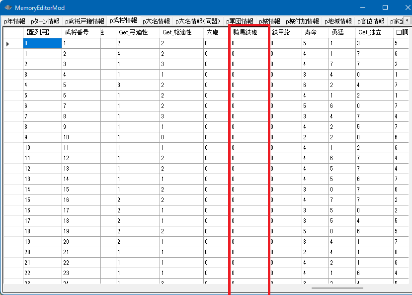
p武将情報[ix].騎馬鉄砲
void カスタム::On_プレイヤ担当ターン《メイン画面》() {
for (int iBushouID = 0; iBushouID < 最大数::武将情報::配列数; iBushouID++) {
// 死んでない
if (p武将戸籍情報[iBushouID].状態 != 状態::死亡 && p武将戸籍情報[iBushouID].戦死 == false) {
デバッグ出力 << Get_名字(iBushouID) + Get_名前(iBushouID) << "は、";
if (p武将情報[iBushouID].騎馬鉄砲) {
デバッグ出力 << "騎馬鉄砲" << " ";
}
デバッグ出力 << "が使えます" << endl;
}
}
}
void カスタム::On_プレイヤ担当ターン《メイン画面》() {
for (int iBushouID = 0; iBushouID < 最大数::武将情報::配列数; iBushouID++) {
// 死んでない
if (p武将戸籍情報[iBushouID].状態 != 状態::死亡 && p武将戸籍情報[iBushouID].戦死 == false) {
p武将情報[iBushouID].騎馬鉄砲 = true;
}
}
}
p武将情報[ix].足軽適性
p武将情報[ix].騎馬適性
int Get_鉄砲適性(int 武将番号【配列用】)
void Set_鉄砲適性(int 武将番号【配列用】, int 鉄砲適性値)
p武将情報[ix].水軍適性
int Get_弓適性(int 武将番号【配列用】)
void Set_弓適性(int 武将番号【配列用】, int 弓適性値)
int Get_槍適性(int 武将番号【配列用】)
void Set_槍適性(int 武将番号【配列用】, int 槍適性値 )
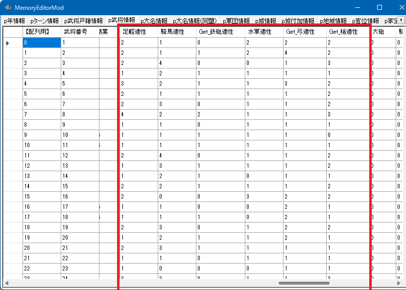
void カスタム::On_プレイヤ担当ターン《メイン画面》() {
for (int iBushouID = 0; iBushouID < 最大数::武将情報::配列数; iBushouID++) {
// 死んでない
if (p武将戸籍情報[iBushouID].状態 != 状態::死亡 && p武将戸籍情報[iBushouID].戦死 == false) {
デバッグ出力 << Get_名字(iBushouID) + Get_名前(iBushouID) << "は、" << endl;
if (p武将情報[iBushouID].足軽適性 >= 足軽適性::Ａ) {
デバッグ出力 << "足軽適性" << " ";
}
if (p武将情報[iBushouID].騎馬適性 >= 騎馬適性::Ａ) {
デバッグ出力 << "騎馬適性" << " ";
}
if (Get_鉄砲適性(iBushouID) >= 鉄砲適性::Ａ) {
デバッグ出力 << "鉄砲適性" << " ";
}
if (p武将情報[iBushouID].水軍適性 >= 水軍適性::Ａ) {
デバッグ出力 << "水軍適性" << " ";
}
if (Get_弓適性(iBushouID) >= 弓適性::Ａ) {
デバッグ出力 << "弓適性" << " ";
}
if (Get_槍適性(iBushouID) >= 槍適性::Ａ) {
デバッグ出力 << "槍適性" << " ";
}
デバッグ出力 << "が高いです。" << endl;
}
}
}
void カスタム::On_プレイヤ担当ターン《メイン画面》() {
int iBushouID = Get_武将番号【配列用】(顔番号::織田信長);
if (0 <= iBushouID && iBushouID < 最大数::武将情報::配列数) {
int 最大兵数 = Get_武将最大兵数(iBushouID);
p武将情報[iBushouID].足軽適性 = 足軽適性::Ｂ;
p武将情報[iBushouID].騎馬適性 = 騎馬適性::Ｅ;
Set_鉄砲適性(iBushouID, 鉄砲適性::Ｓ);
p武将情報[iBushouID].水軍適性 = 水軍適性::Ａ;
Set_弓適性(iBushouID, 弓適性::Ｄ);
Set_槍適性(iBushouID, 槍適性::Ｃ);
}
}
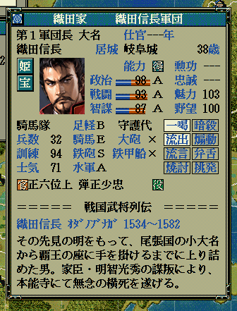
大砲が所持しいているかどうか、鉄甲船を所持しているかどうかの判定フラグです
p武将情報[ix].大砲
p武将情報[ix].鉄甲船
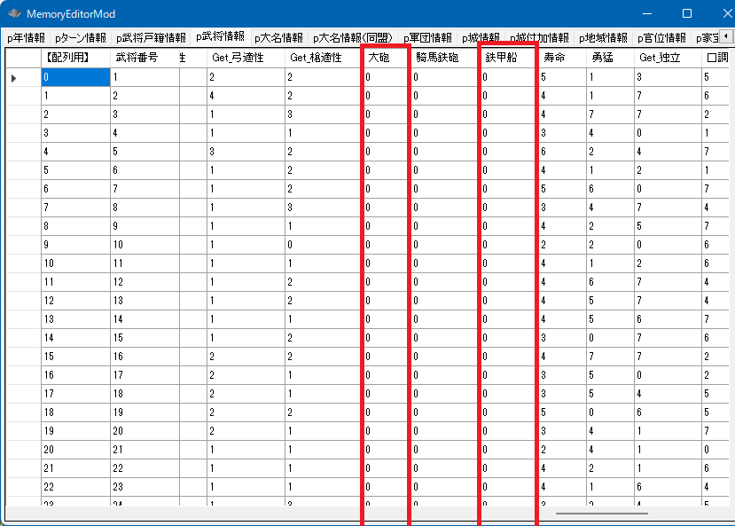
void カスタム::On_プレイヤ担当ターン《メイン画面》() {
for (int iBushouID = 0; iBushouID < 最大数::武将情報::配列数; iBushouID++) {
// 死んでない
if (p武将戸籍情報[iBushouID].状態 != 状態::死亡 && p武将戸籍情報[iBushouID].戦死 == false) {
デバッグ出力 << Get_名字(iBushouID) + Get_名前(iBushouID) << "は、";
if (p武将情報[iBushouID].大砲) {
デバッグ出力 << "大砲" << " ";
}
if (p武将情報[iBushouID].鉄甲船) {
デバッグ出力 << "鉄甲船" << " ";
}
デバッグ出力 << "が使えます" << endl;
}
}
}
void カスタム::On_プレイヤ担当ターン《メイン画面》() {
for (int iBushouID = 0; iBushouID < 最大数::武将情報::配列数; iBushouID++) {
// 死んでない
if (p武将戸籍情報[iBushouID].状態 != 状態::死亡 && p武将戸籍情報[iBushouID].戦死 == false) {
p武将情報[iBushouID].大砲 = true;
p武将情報[iBushouID].鉄甲船 = true;
}
}
}
「武将 － 能力」に関する主な所は以上となります。
詳しくは「武将情報型.h」や「武将情報列挙.h」を参照してください。